Basi concettuali: cos'è un agente, cos'è un modello linguistico, perché funziona, come viene addestrato.
DATA, AT COREFRANCESCO GIANFERRARI PINI
SEZIONE 01
Cosa è un agente?
Cosa ci aspettiamo da un agente, e di cosa è fatto.
SEZIONE 1 · COSA È UN AGENTE
Cosa è un agente? Le aspettative
Che aspettative abbiamo da un agente?
"Un chatbot, ma più intelligente"
"Che risponda a qualsiasi domanda"
"Che non sbagli mai"
"Che sostituisca una persona"
"Che faccia da solo, senza che io lo guidi passo passo"
"Che usi i miei strumenti: mail, file, gestionali"
"Che si accorga quando sbaglia — e ci riprovi"
"Che sappia spiegarmi cosa ha fatto e perché"
Ci aspettiamo che porti a termine un task — non che risponda a una domanda.
01 / Sezione 1
SEZIONE 1 · COSA È UN AGENTE
Lo spazio delle soluzioni
Dove gli agenti funzionano già, e dove serve rinforzo: due assi — quanto contesto richiede il task, quanto è verificabile il risultato.
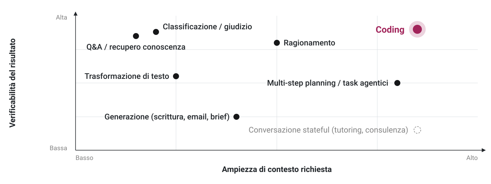
Tutto ciò che il corso costruisce — tool, knowledge base, skills, orchestrazione — è un modo di rinforzare i task dove il modello da solo è fragile. E la frontiera si sposta di mese in mese.
02 / Sezione 1
SEZIONE 1 · COSA È UN AGENTE
Un agente è un sistema composto
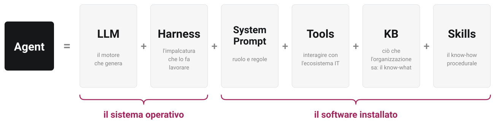
LLM e Harness sono il sistema operativo. Il resto è il software installato — ed è il software che distingue un agente da un altro.
03 / Sezione 1
SEZIONE 1 · COSA È UN AGENTE
Il ruolo dell'harness
L'Harness è un software "classico", deterministico, che orchestra le attività che fa l'agente sotto la direzione del LLM.
Se pensiamo all'agente come un'entità neuro-simbolica, l'LLM è la parte Neuro, l'Harness quella simbolica.
È come l'esoscheletro operativo, all'interno del quale c'è un cervello, l'LLM.
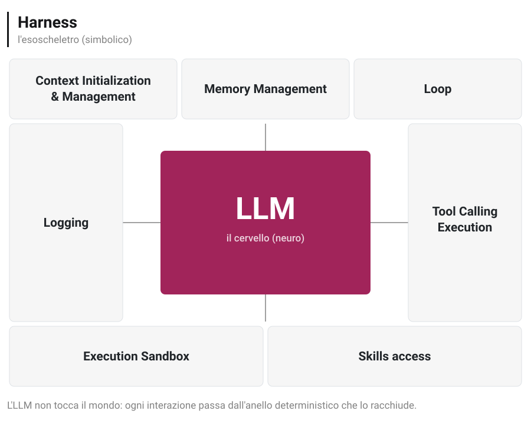
04 / Sezione 1
SEZIONE 02
L'LLM: cos'è e come genera
Una distribuzione sul prossimo token, e un loop che non si ferma fino a STOP.
SEZIONE 2 · L'LLM: COS'È E COME GENERA
Che cos'è un modello linguistico
Un modello linguistico assegna una probabilità al prossimo token, dato il contesto che lo precede.
1951
Claude Shannon stima l'entropia dell'inglese con un gioco: mostrare un testo troncato a una persona e chiederle di indovinare la lettera successiva. Un LLM è la macchina che gioca a quel gioco — meglio di chiunque.
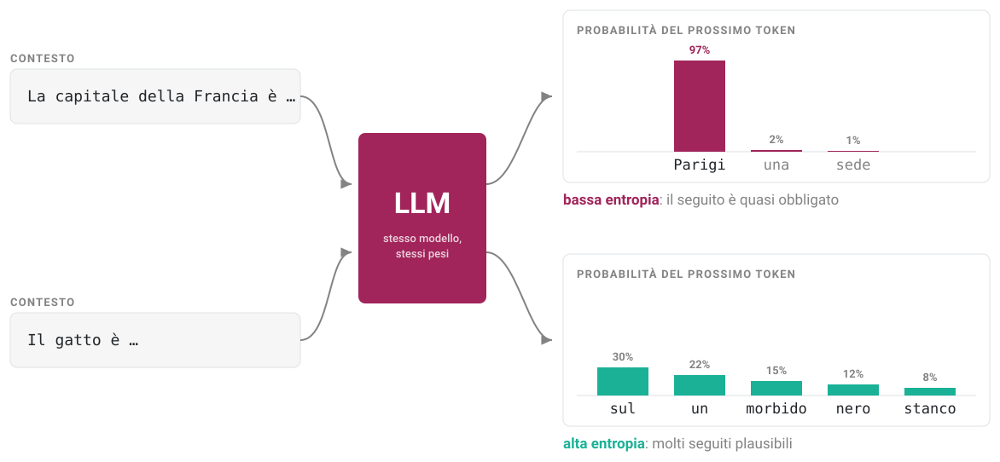
Prevedere bene significa comprimere bene: non è una metafora, è un teorema. Lo ritroveremo.
05 / Sezione 2
SEZIONE 2 · L'LLM: COS'È E COME GENERA
La generazione: un token alla volta
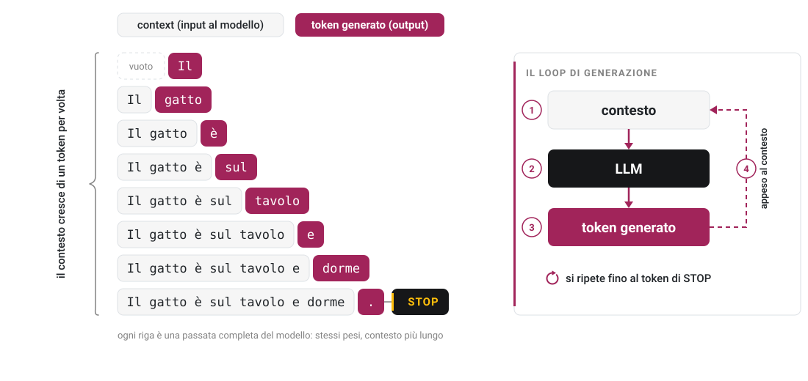
Il modello non pianifica una risposta. Produce un token alla volta. Ogni nuovo token viene appeso al contesto e il contesto completo viene rivalutato per produrre il successivo.
06 / Sezione 2
SEZIONE 2 · L'LLM: COS'È E COME GENERA
Il golfista
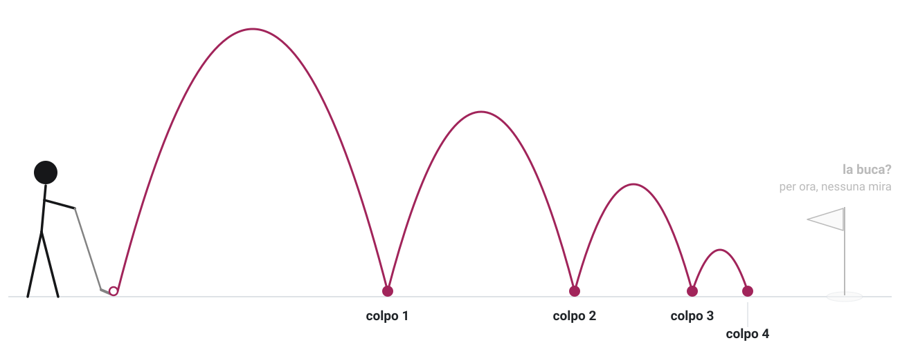
Come un golfista bravissimo a colpire la pallina: ogni colpo parte da dove è atterrata l'ultima, informato dalla storia di tutti i colpi precedenti. Ma alla buca, per ora, non mira nessuno.
07 / Sezione 2
SEZIONE 2 · L'LLM: COS'È E COME GENERA
Il 1° loop: la generazione
finché non esce STOP:
leggi il contestogenera un tokenappendilo al contesto
Lo chiamiamo 1° loop perché ne arriveranno altri due.
08 / Sezione 2
SEZIONE 2 · L'LLM: COS'È E COME GENERA
Il 2° loop: la conversazione
finché la conversazione continua:
l'utente scrive[1° loop: genera token fino a STOP]la risposta si accoda alla storia
Un chatbot è due loop annidati: dentro ogni turno, il loop di generazione; attorno, la conversazione che accumula contesto. I primi chatbot erano esattamente questo.
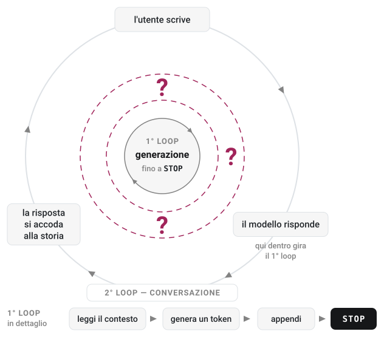
Il 3° loop — quello agentico — non si aggiungerà in coda: si infilerà in mezzo. Lo vedremo nascere oggi, e lo apriremo al prossimo incontro.
09 / Sezione 2
SEZIONE 03
Perché funziona
Dentro il modello: il significato diventa geometria.
SEZIONE 3 · PERCHÉ FUNZIONA
La base di tutto: a ogni parola il suo vettore
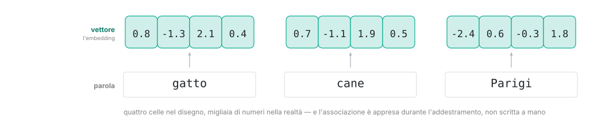
Per far entrare il linguaggio in una macchina che calcola, la mossa fondativa è: a ogni parola, una lista di numeri. Quell'associazione non la scrive nessuno a mano: viene appresa.
Perché proprio dei numeri? Perché sui numeri si può calcolare — è la prossima slide.
10 / Sezione 3
SEZIONE 3 · PERCHÉ FUNZIONA
Vettori e prodotto scalare
Vettoreuna lista di numeri — ovvero una direzione nello spazio.
Prodotto scalaremisura quanto due vettori si sovrappongono: è un rilevatore di affinità.
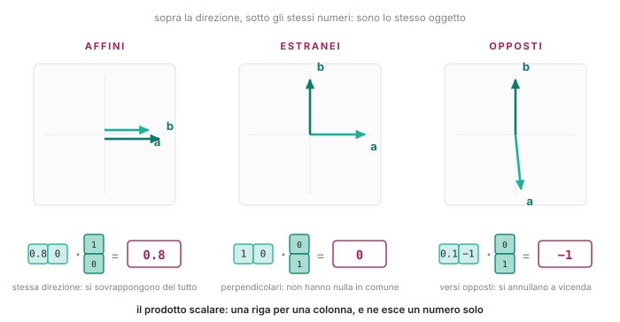
Tutto ciò che segue — embeddings, attention, fully connected — è questa operazione, ripetuta miliardi di volte.
11 / Sezione 3
SEZIONE 3 · PERCHÉ FUNZIONA
La scala del calcolo: vettori e matrici
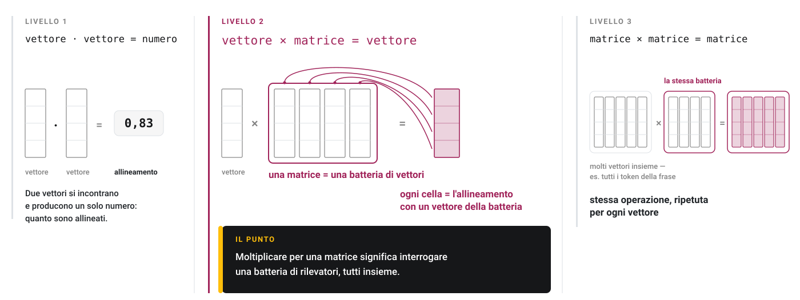
È tutto qui il calcolo di un LLM — ed è per questo che le GPU, fatte per moltiplicare matrici, sono il suo motore naturale.
12 / Sezione 3
SEZIONE 3 · PERCHÉ FUNZIONA
Embeddings: lo spazio delle idee
Un embedding è il vettore che rappresenta un token in uno spazio a migliaia di dimensioni.
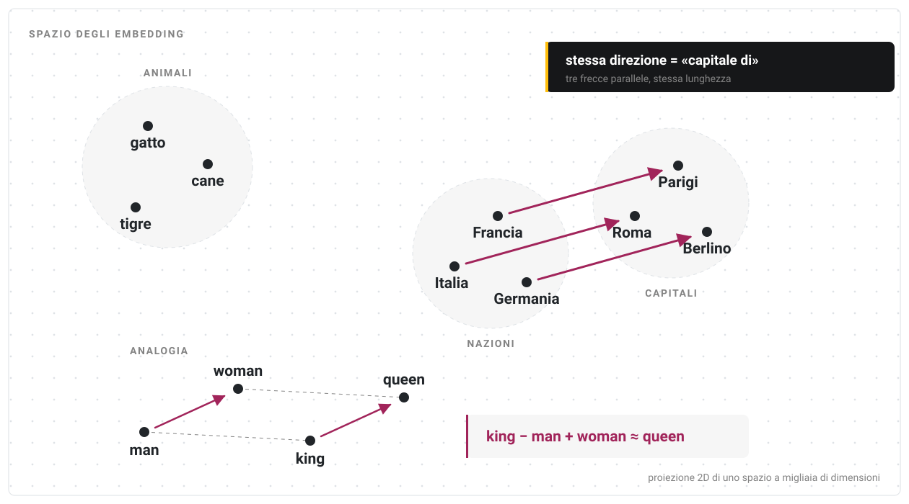
Un LLM, in fondo, è un manipolatore di embeddings.
13 / Sezione 3
SEZIONE 3 · PERCHÉ FUNZIONA
La tokenizzazione
L'unità non è la parola: è il tokenframmenti di testo da un vocabolario fisso, ~100.000 voci.
Le parole comuni sono un token interoquelle rare vengono spezzate.
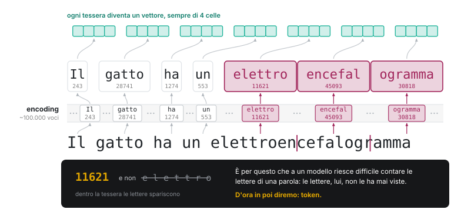
14 / Sezione 3
SEZIONE 3 · PERCHÉ FUNZIONA
L'architettura, in un colpo d'occhio
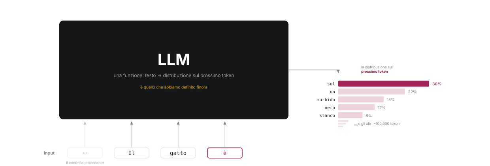
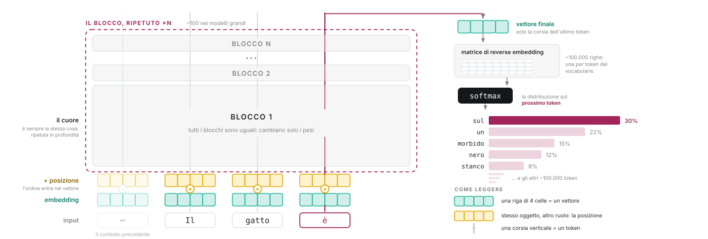
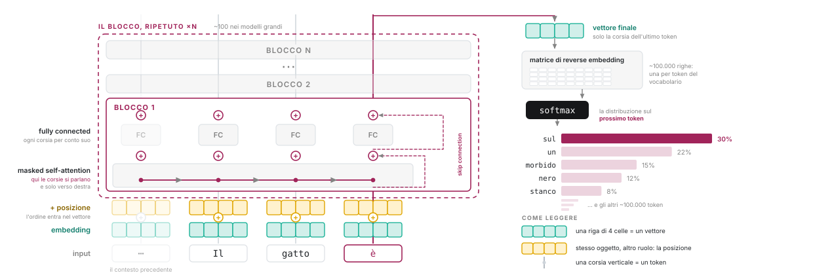
Dal testo alla distribuzione sul prossimo token. Ogni pezzo di questo percorso è una delle prossime slide.
Il canale centrale scorre: ogni sottoblocco non sostituisce l'embedding, gli somma il suo contributo.
Dopo la distribuzione, il sampling sceglie il token effettivo.
Semplificato: omesse le normalizzazioni e le teste dell'attention (Slide 18).
15 / Sezione 3
SEZIONE 3 · PERCHÉ FUNZIONA
Fanout: il matching concettuale
Un rilevatore per concettoogni colonna della matrice è un pattern memorizzato; il prodotto scalare misura quanto l'embedding in transito gli somiglia.
Tutti in parallelo (fanout)migliaia di rilevatori scattano insieme, a ogni token, a ogni strato — lo spazio si espande.
La non linearità è un gatepassa solo ciò che è davvero affine; tutto il resto viene azzerato.
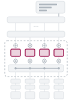
sei quiil fully connected, dentro il blocco
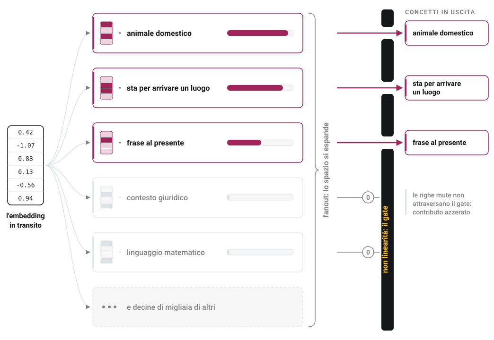
È il rilevatore di affinità della Slide 11, moltiplicato per migliaia: da un rilevatore a una batteria di rilevatori.
16 / Sezione 3
SEZIONE 3 · PERCHÉ FUNZIONA
Compressione: la sovrapposizione
Compressionei concetti sopravvissuti al gate vengono ri-sommati in un unico vettore: più significati coesistono, sovrapposti, nello stesso embedding.
La somma è uno spostamentosommare quel contributo all'embedding originale — è il nodo + della skip connection — lo sposta nello spazio delle idee: il significato si muove, si arricchisce.
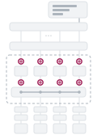
sei quila somma nel canale centrale
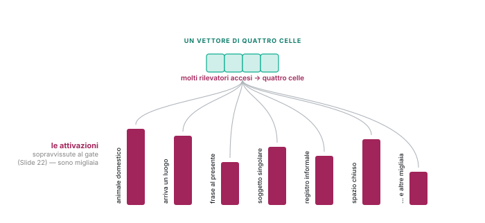
La stessa geometria della Slide 13: le relazioni sono direzioni. Il blocco calcola la direzione in cui muovere il significato.
17 / Sezione 3
SEZIONE 3 · PERCHÉ FUNZIONA
Attention: domande e chiavi
Ogni token emette una domanda (Q)"cosa sto cercando?" — e una chiave (K): "cosa offro a chi cerca?"
L'affinità è ancora un prodotto scalareQ·K misura quanto la chiave di un token risponde alla domanda di un altro.
Tre proiezioni semantiche appresetre matrici, applicate all'embedding di ogni token, lo proiettano in tre vesti. Q e K sono ottimizzate — testa per testa — per trovare il token giusto nel contesto precedente. Ciò su cui fai match non è ciò che ricevi.
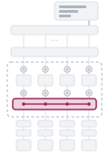
sei qui
Come in biblioteca: porti una richiesta al banco (Q), il match si fa sulle etichette dei dorsi (K). Il contenuto del libro (V) è un'altra cosa — e arriva dopo.
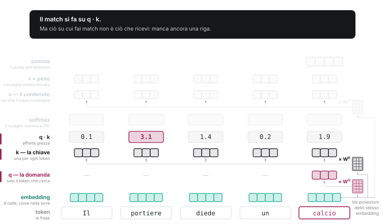
Ogni testa fa una domanda diversa — sintassi, riferimenti, tono: più ricerche in parallelo.
18 / Sezione 3
SEZIONE 3 · PERCHÉ FUNZIONA
Softmax: il budget di ascolto
Da punteggi a percentualila softmax trasforma le affinità grezze in pesi che sommano a 1 — un budget di ascolto da distribuire.
Esagera le differenzechi è più affine prende quasi tutto il budget: è un "max morbido".
sei quila self-attention, dentro il blocco
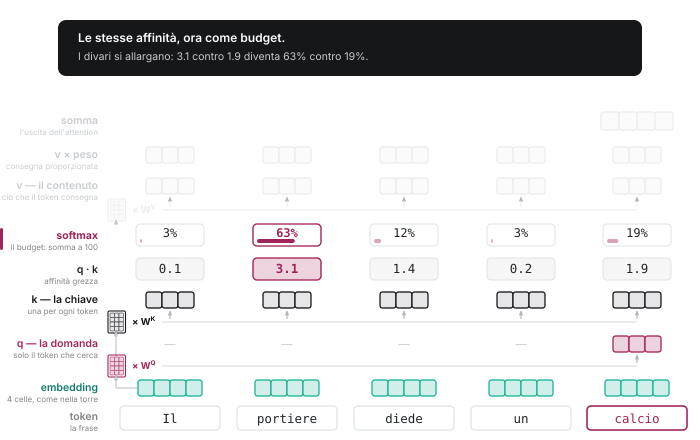
La stessa macchina la ritroveremo all'uscita del modello, quando i punteggi diventeranno la distribuzione sul prossimo token.
19 / Sezione 3
SEZIONE 3 · PERCHÉ FUNZIONA
V: la consegna
Il terzo volto del token: il valuela proiezione V è ottimizzata per estrarre la semantica di quel token in quel contesto — ciò che consegna, se ascoltato, per arricchire il token in arrivo. Il libro, non l'etichetta.
La somma pesata è lo spostamentoi value, pesati dal budget di ascolto, si sommano all'embedding: il significato si muove verso l'interpretazione giusta.
sei quila self-attention, dentro il blocco
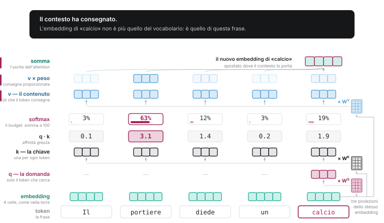
È la manipolazione della Slide 17 — ma qui guidata dal contesto: sono gli altri token a decidere la direzione.
20 / Sezione 3
SEZIONE 3 · PERCHÉ FUNZIONA
Lo stesso token, due contesti
Stessa macchina, altra frasele tre matrici di proiezione non cambiano: cambia solo ciò che entra.
Il budget si sposta da solonella prima frase «calcio» ascolta «portiere» al 63%; nella seconda ascolta «ossa» e «forti» — 78% in due.
Ed è questo a decidere il significatolo stesso token esce dall'attention in due punti diversi dello spazio delle idee.
sei quila self-attention, dentro il blocco
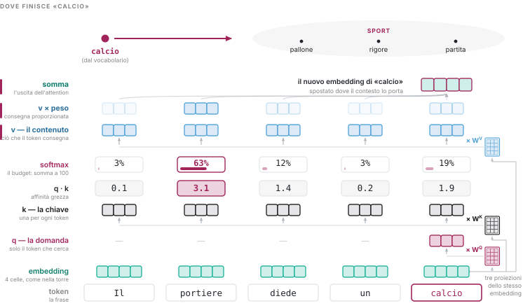
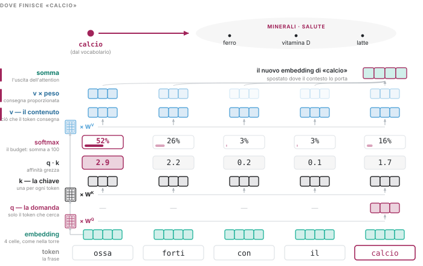
Nessuno ha scritto da nessuna parte che «calcio» è ambiguo: l'ambiguità la scioglie il contesto, e lo strumento sono i pesi.
20b / Sezione 3
SEZIONE 3 · PERCHÉ FUNZIONA
Positional encoding: l'ordine conta
L'attention è cieca all'ordinenel match Q·K nulla dice chi viene prima: "il gatto morde il cane" e "il cane morde il gatto" sarebbero lo stesso sacchetto di embedding.
La correzionea ogni embedding si somma un vettore che codifica la sua posizione nella sequenza.
Ancora uno spostamentoanche la posizione è una direzione nello spazio delle idee: "gatto, secondo token della frase" è il punto gatto, spostato un po'.
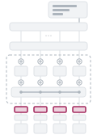
sei quil'innesto della posizione, all'ingresso
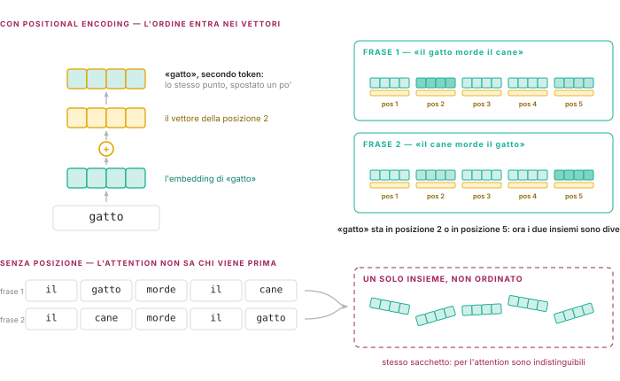
È l'innesto "+ positional encoding" già visto nella mappa dell'architettura (Slide 15).
21 / Sezione 3
SEZIONE 3 · PERCHÉ FUNZIONA
Reverse embedding: tornare ai token
L'operazione inversa della primaall'ingresso, da token a vettore; all'uscita, dal vettore finale a una preferenza su ogni token del vocabolario.
Ancora prodotti scalaril'embedding finale viene confrontato con il vettore di ogni token del vocabolario: ~100.000 affinità — i logits — che la softmax trasforma nella distribuzione.
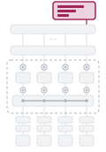
sei quila testa del modello, in uscita
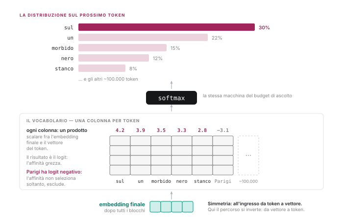
È la distribuzione da cui siamo partiti: il cerchio del "manipolatore di embeddings" si chiude.
22 / Sezione 3
SEZIONE 3 · PERCHÉ FUNZIONA
Il contesto ha un costo
Il costo è quadraticoogni nuovo token fa Q·K con tutti i precedenti: raddoppi il contesto, quadruplichi il lavoro.
Prefillil costo iniziale di "leggere" il prompt: calcolare K e V di ogni token, a ogni strato.
KV cachechiavi e valori dei token già visti si salvano: ogni giro del 1° loop paga solo il token nuovo.
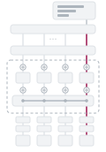
sei quile corsie e gli strati, in tutta la torre
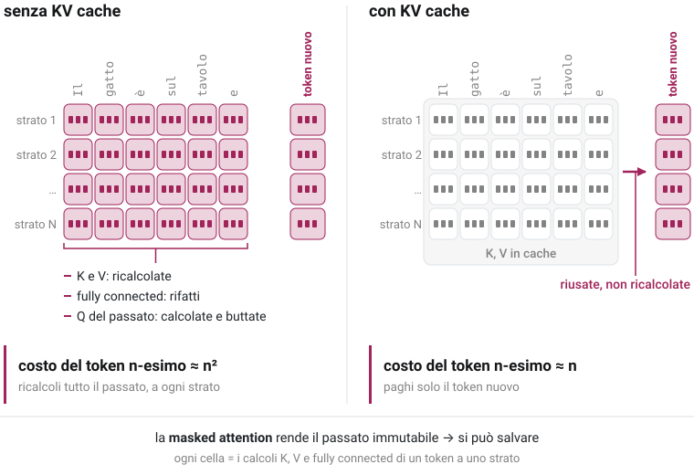
Funziona perché la masked attention rende il passato immutabile: i token precedenti non vedono il nuovo, quindi i loro K, V e fully connected non cambiano mai. Il contesto resta comunque una risorsa costosa: lo ritroveremo.
23 / Sezione 3
SEZIONE 3 · PERCHÉ FUNZIONA
La conoscenza è nei pesi
Ciò che è scrittola conoscenza abita nei vettori appresi — gli embedding dei token e le colonne delle matrici: i pattern dei rilevatori e i loro contributi.
Ciò che emergele regolarità geometriche tra quei vettori — le direzioni-relazione dello spazio delle idee. Nessuno le ha scritte: si sono formate perché servivano a predire.
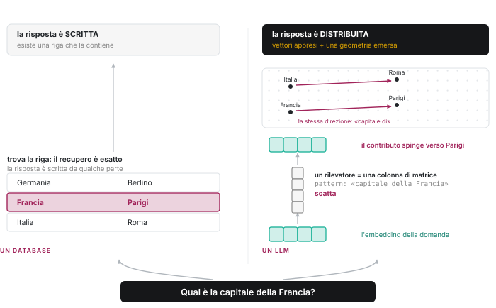
Niente archivio consultabile, niente righe di database. Ed è per questo che il recupero può sbagliare — prossima slide.
24 / Sezione 3
SEZIONE 3 · PERCHÉ FUNZIONA
L'LLM come compressore lossy
Per far stare trilioni di token in miliardi di parametri, il modello è costretto ad astrarre: non memorizza, modella.
I numeri non tornanonon c'è spazio per memorizzare letteralmente il training set.
Cosa restaconcetti, relazioni, regolarità — la geometria dello spazio delle idee.
Il sottoprodottole capacità emergenti — ragionamento, analogia, transfer tra domini — non sono programmate: sono un effetto collaterale della compressione.
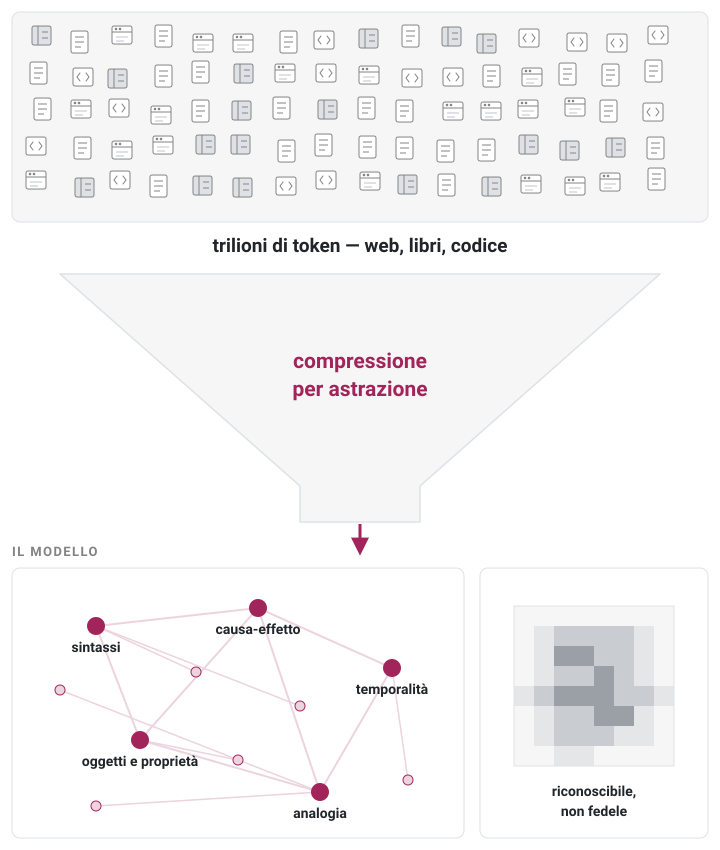
"ChatGPT è un JPEG sfocato del web"
Ted Chiang, The New Yorker — e per comprimere così, ha dovuto capire.
25 / Sezione 3
SEZIONE 3 · PERCHÉ FUNZIONA
Conseguenze della compressione
Dove è forte
Framing concettuali su qualunque dominio
Ragionamento e analogia
Trasformazione di testo: traduzione, sintesi, riformattazione
Dove serve cautela
Fatti puntuali: date, numeri, citazioni letterali
Conoscenza post-cutoff
Nicchie poco rappresentate nel training
Dati proprietari mai visti
Calcoli numerici precisi
Fidati del framing, verifica i fatti. Le allucinazioni non sono un bug morale del modello: sono il comportamento strutturale di un compressore lossy a cui chiedi di ricostruire ciò che non ha memorizzato bene.
26 / Sezione 3
SEZIONE 3 · PERCHÉ FUNZIONA
MoE: non tutti i pesi lavorano sempre
Il perchéil fanout è la parte più costosa — ma per un dato token la maggior parte dei rilevatori resta muta. Allora i pesi si spezzano in esperti, e si attivano solo i pochi rilevanti.
Il routerdavanti agli esperti, un piccolo selettore decide a chi mandare ogni token.
sei quiil fully connected, dentro il blocco
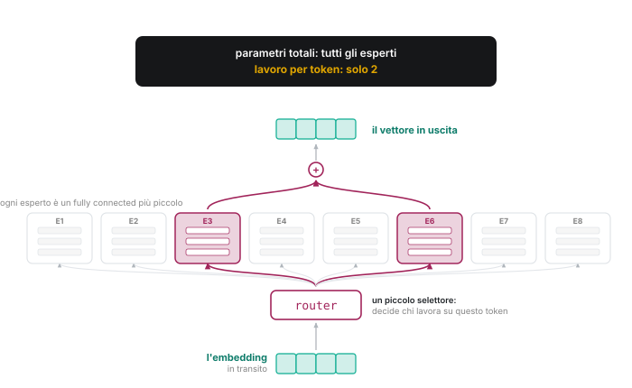
Il risultato: modelli enormi nei parametri totali, ma con un costo per token da modello piccolo. Torneremo sul lato economico.
27 / Sezione 3
SEZIONE 04
Come viene addestrato
Tre fasi: da completatore di testo, a conversatore, a modello che sa volere i tool.
SEZIONE 4 · COME VIENE ADDESTRATO
Le tre fasi
Ogni fase produce un modello diverso — e ognuna parte dal modello prodotto dalla precedente.
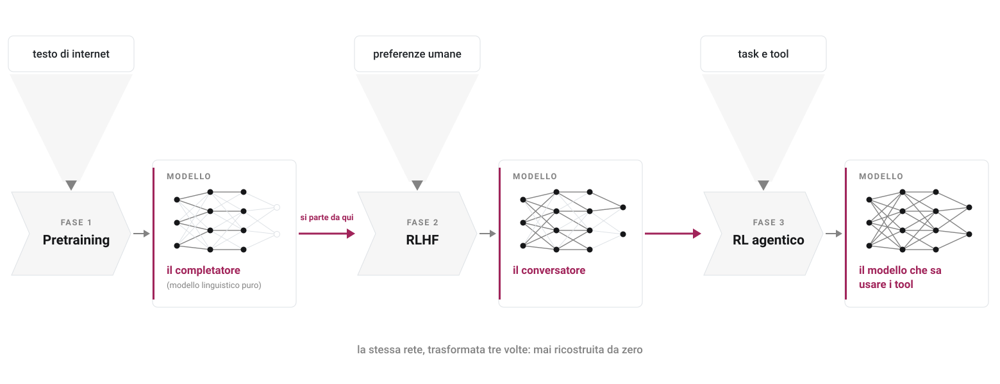
28 / Sezione 4
SEZIONE 4 · COME VIENE ADDESTRATO
Pretraining: indovinare il prossimo token
Il giocoprendi un testo vero, nascondi il seguito, chiedi al modello il prossimo token.
Il punteggio (cross-entropy)quanta probabilità hai dato al token che era davvero lì? Tanta: punteggio buono. Poca: penalità.
La correzione (gradient descent)un metodo sistematico e iterativo che, a ogni errore, aggiusta di poco i valori di tutte le matrici che abbiamo visto — embedding, Q, K, V, rilevatori.
Cosa si impara davveroil giudizio è sul singolo token successivo, ma ciò che alla fine viene stimata è l'intera distribuzione.
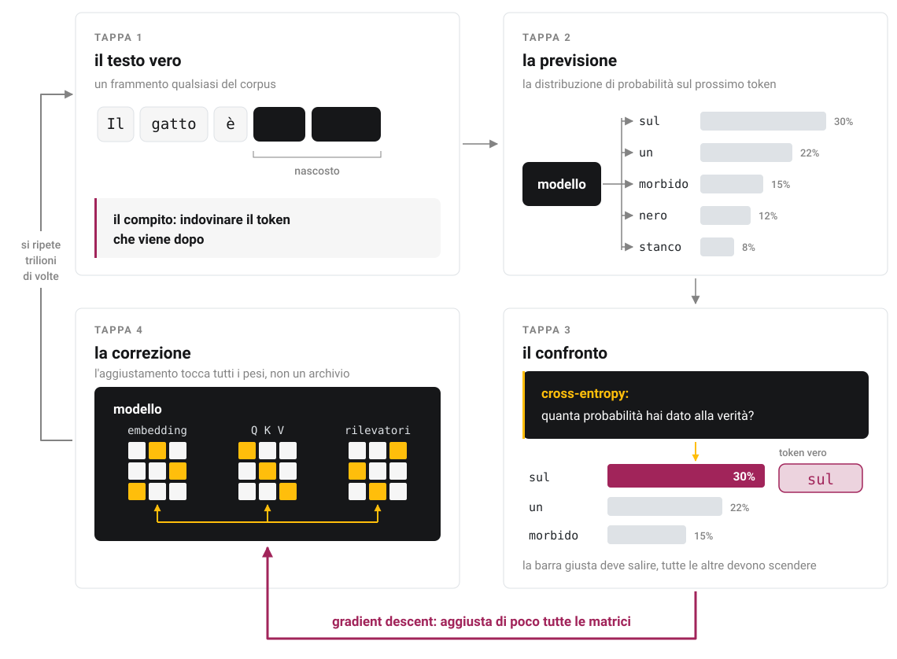
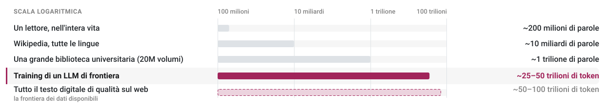
Minimizzare la cross-entropy è letteralmente comprimere: è il fronte 1 della Slide 5. E tutto questo, ripetuto su 25–50 trilioni di token.
29 / Sezione 4
SEZIONE 4 · COME VIENE ADDESTRATO
Gradient descent: sbaglia, misura, correggi
L'errore è un paesaggioimmagina una valle: ogni punto è una configurazione dei pesi, l'altitudine è quanto il modello sbaglia.
La discesail gradiente dice, per ogni singolo peso, in che direzione muoverlo per sbagliare un po' meno. Un passetto, e si ricomincia.
Sistematico, non intelligentenessuna comprensione: solo la pendenza locale, seguita miliardi di volte, su miliardi di pesi insieme.
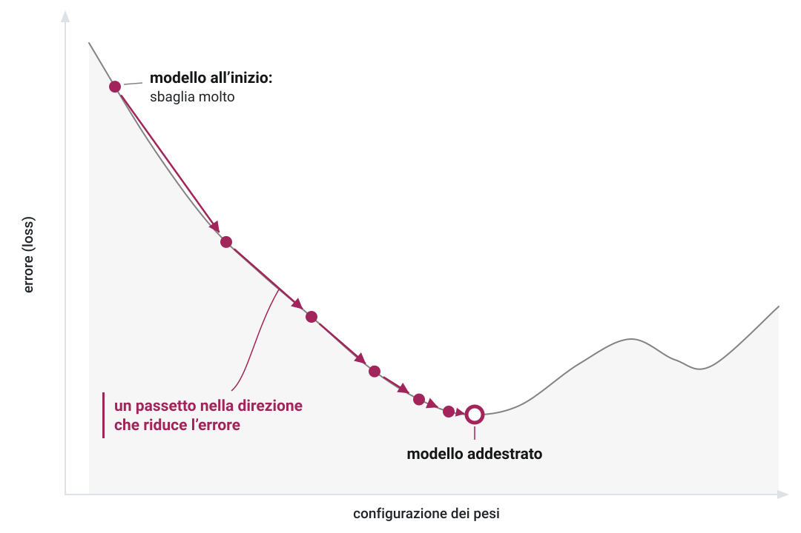
Sarà lo stesso metodo per tutte e tre le fasi: cambia solo il punteggio da migliorare.
30 / Sezione 4
SEZIONE 4 · COME VIENE ADDESTRATO
RLHF: arriva la mira
Il problemail completatore sa solo proseguire il testo: non risponde, completa. A "Come posso aumentare le vendite?" reagisce con altre domande — come farebbe un testo del web — non con una risposta.
La miragli umani confrontano coppie di risposte e dicono quale preferiscono.
Il trucco (reward model)quelle preferenze addestrano un secondo modello, che impara a stimare il giudizio umano: è lui a dare la reward, milioni di volte, al posto nostro.
Novembre 2022, ChatGPT: non un nuovo modello — GPT-3 esisteva dal 2020. Un nuovo modo di addestrarlo a conversare.
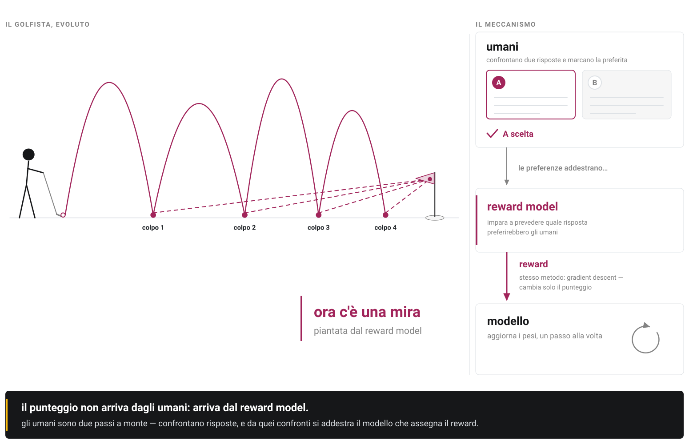
Il modello non ottimizza verso il giudizio umano — ottimizza verso la stima che il reward model fa di quel giudizio. Il golfista ora mira alla buca: ma la bandierina l'ha piantata il reward model.
31 / Sezione 4
SEZIONE 4 · COME VIENE ADDESTRATO
RL agentico: traiettorie
Cambia l'unità di giudizionon più la frase migliore, ma la traiettoria che completa il task.
Come si allenail modello prova il task molte volte; le traiettorie che arrivano in fondo vengono premiate, le altre no (GRPO: si confrontano gruppi di tentativi).
Cosa emergeil modello impara che chiamare un tool al momento giusto è ciò che fa vincere — nasce la "volontà" della tool call.
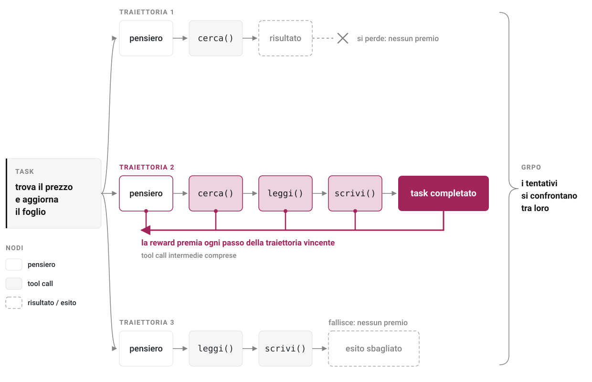
La traiettoria — non la risposta — diventa l'unità di valore. Ce lo ritroveremo: è l'artefatto primario di un agente.
32 / Sezione 4
SEZIONE 4 · COME VIENE ADDESTRATO
Nasce il 3° loop
Com'è fatta davverouna tool call è testo: il modello emette una richiesta strutturata — nome del tool, parametri — e si ferma.
I tool vanno dichiaratiil modello può volere solo i tool che conosce: l'elenco, con nome e descrizione di ciascuno, gli viene dato in apertura di contesto.
Il giroqualcuno esegue, il risultato rientra nel contesto, il modello riparte: giro dopo giro, fino a task completato.
Il loop che mancavaè il 3° loop — e si infila esattamente lì, tra la generazione e la conversazione.
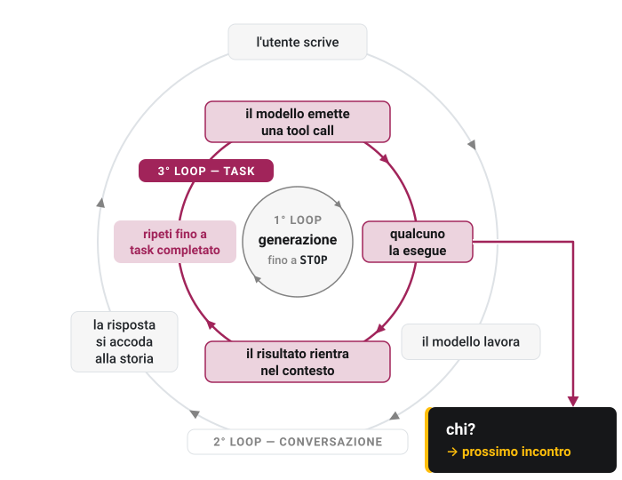
Il modello sa solo chiedere. Chi esegue davvero — chi fa parsing, dispatch, sandbox — è il tema del prossimo incontro: l'harness.
33 / Sezione 4
SEZIONE 4 · COME VIENE ADDESTRATO
Il modello è stateless: il contesto è tutto
Il protagonista di Memento: amnesia anterograda — ricorda la vita prima dell'incidente, ma ogni nuovo ricordo svanisce in minuti. Sopravvive scrivendo tutto su Polaroid e tatuaggi: ciò che gli serve sapere deve essere fisicamente davanti ai suoi occhi, ora. Un LLM funziona così: il training è la "vita prima" — enorme, ma congelata. Tutto il resto esiste solo se è nel contesto, in questo istante.
Nessuna memoria internaa ogni chiamata il modello rilegge tutto da capo. L'unica sua memoria è il contesto che gli passi — la KV cache è un risparmio di calcolo, non un ricordo.
E il contesto si accumulaturni di conversazione, dichiarazioni dei tool, tool call, risultati: ogni giro dei tre loop appende qualcosa. Può crescere moltissimo.
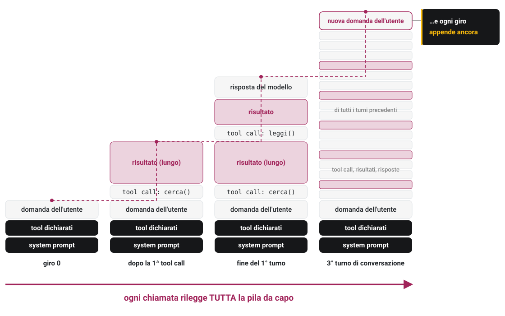
E abbiamo visto che il contesto costa — e vedremo tra poco che, oltre a costare, a un certo punto inizia a far male.
34 / Sezione 4
SEZIONE 4 · COME VIENE ADDESTRATO
Il modello è figlio dei suoi training set
Tutto viene dai daticiò che il modello sa, come parla, cosa considera ovvio — è la conseguenza di ciò che ha letto, con i bias di chi quei testi li ha scritti.
Il cut-offil mondo del modello si ferma alla data di raccolta dei dati: di ciò che accade dopo, nei pesi non c'è nulla.
Anche il caratterecosa risponde volentieri, come si comporta — viene anch'esso da un training set: le preferenze umane, stimate dal reward model. Chi fornisce il feedback plasma l'AI: implicazioni etiche, geopolitiche, di business.
Il modello che usi non è "l'AI": è una particolare AI, addestrata con particolari valori da particolari persone.
La conoscenza sui modelli fa parte dei training set: un'AI ha letto i paper che descrivono il suo stesso funzionamento interno. L'uomo non sa progettare un cervello — un'AI ha conoscenza di dettaglio del proprio.
35 / Sezione 4
SEZIONE 05
Il modello nel mondo
Context rot, multimodality, reasoning, economia e mercato.
SEZIONE 5 · IL MODELLO NEL MONDO
Context rot
Il fattocon il contesto lungo, la qualità degrada: il modello trova peggio ciò che gli serve, anche se c'è.
Perchéil budget di attenzione (la softmax della Slide 19) si diluisce su migliaia di token: tutto ascolta un po', niente abbastanza.
La conseguenzail contesto è una risorsa scarsa da governare, non un cassetto infinito.
Regole pratiche. Nuovo compito, nuova chat: "continuare" una conversazione lunga per comodità peggiora, non migliora. Non riempire: seleziona ciò che entra.
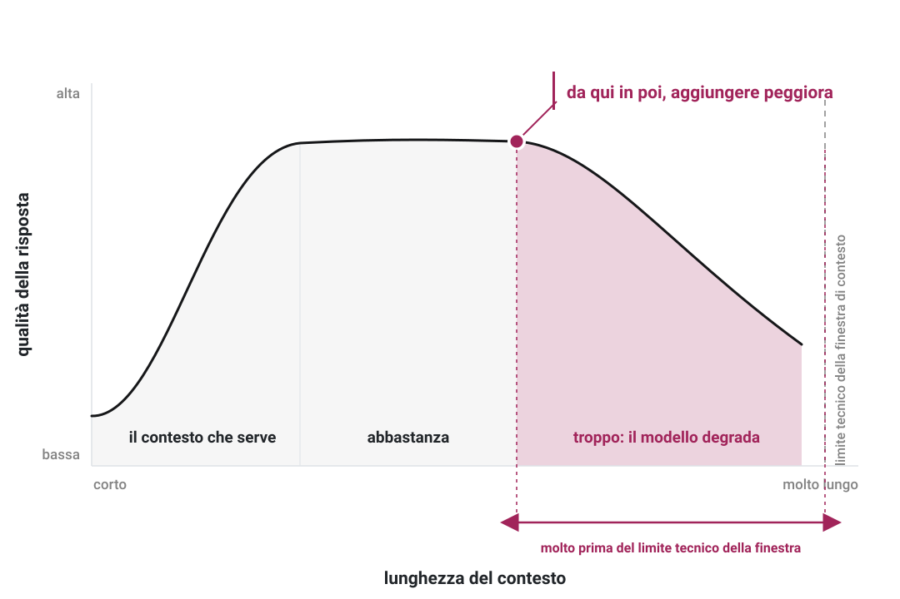
Governarlo — decidere cosa entra, cosa esce, cosa si riassume — non lo fa il modello. Serve qualcuno fuori: l'harness.
36 / Sezione 5
SEZIONE 5 · IL MODELLO NEL MONDO
Multimodality
Stessa macchina, ingressi diversiun'immagine viene spezzata in tessere (patch); ogni tessera diventa un embedding, come un token.
Lo stesso spazio delle ideela foto di un gatto e la parola "gatto" finiscono vicine: il significato è la posizione, non il mezzo.
E oltrevale anche per audio e video.
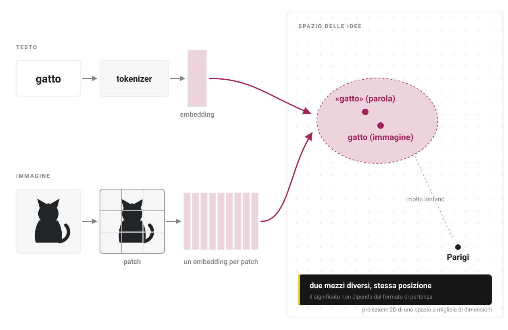
Per questo lo stesso modello può leggere un contratto e guardarne la scansione.
37 / Sezione 5
SEZIONE 5 · IL MODELLO NEL MONDO
Reasoning
Pensare è generareprima di rispondere, il modello genera token di ragionamento: restano nel contesto, ma non sono la risposta.
Da dove vieneè ancora RL: vengono premiate le traiettorie di pensiero che arrivano alla risposta giusta (Slide 32).
Il prezzopiù qualità = più calcolo alla domanda — i token di pensiero si pagano come gli altri.
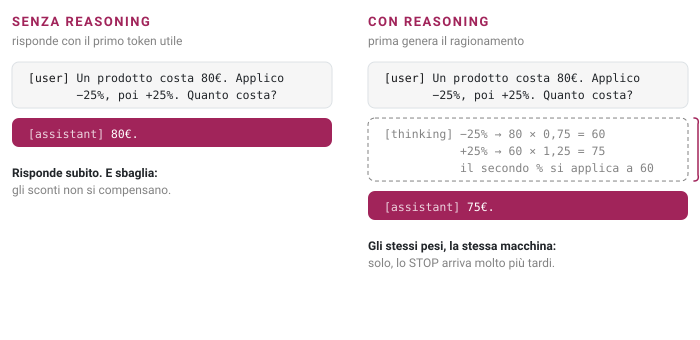
È sempre il 1° loop: semplicemente, lo STOP arriva molto più tardi.
38 / Sezione 5
SEZIONE 5 · IL MODELLO NEL MONDO
I costi: training, inferenza, distillazione
Traininginvestimento una tantum, enorme: mesi di cluster di GPU — ordine delle decine di milioni.
Un pretraining, molti RLdallo stesso foundational model si addestrano poi più varianti via RL — conversazionale, coding, agentica: il grosso dell'investimento si paga una volta sola.
Inferenzacentesimi per chiamata, moltiplicati per miliardi di chiamate: è qui che si gioca il margine.
Distillazioneil ponte: il modello grande e costoso genera gli esempi su cui si addestra un modello piccolo ed economico — qualità simile, costo per token molto più basso.
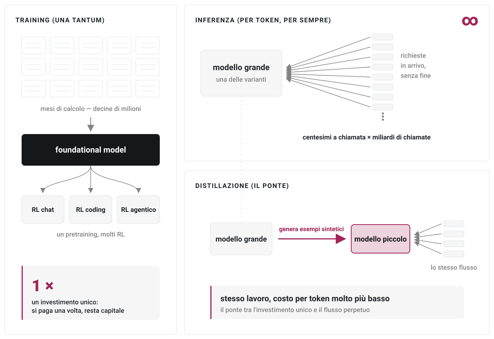
Tutto è moltiplicazione di matrici (Slide 12): per questo l'economia dei modelli è, in fondo, economia di GPU.
39 / Sezione 5
SEZIONE 5 · IL MODELLO NEL MONDO
Il prezzo per token
Input e output hanno prezzi diversii token di output costano di più (~3–5×): vengono generati uno alla volta; quelli di input si processano in parallelo nel prefill (Slide 23).
Il contesto si ripaga a ogni chiamatail modello è stateless (Slide 34): tutta la pila rientra — e si ripaga — a ogni giro.
La cache sconta ciò che non cambiail prefisso stabile (system prompt, tool) costa una frazione se riusato: è la KV cache diventata listino.
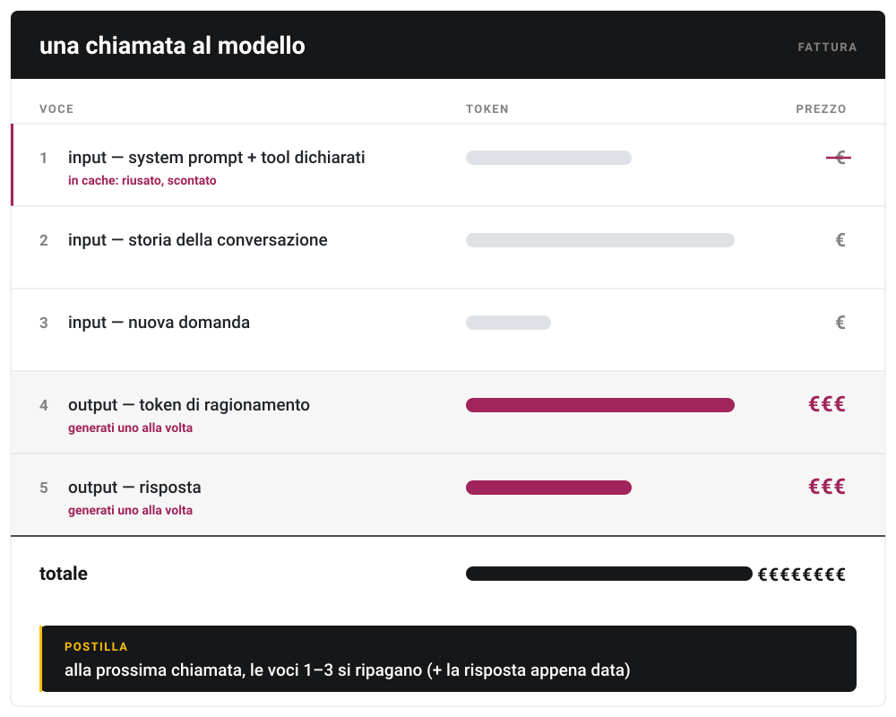
Ordine di grandezza oggi: da centesimi a qualche dollaro per milione di token, a seconda del modello. Le cifre invecchiano in fretta: le regole no.
40 / Sezione 5
SEZIONE 5 · IL MODELLO NEL MONDO
Il valore delle traiettorie
Ogni conversazione è una traiettoria: prompt, risposte, correzioni, approvazioni e rifiuti — una traccia ricca di segnali su cosa funziona.
Per l'utente
Un mezzo per risolvere un problema oggi; stateless, dimenticata domani.
Per il provider
Miliardi di traiettorie reali = il carburante del prossimo training; pattern d'uso che nessun test artificiale produce.
Il moat non è il modello — il modello diventa commodity. Il moat sono le traiettorie d'uso reale, che nessuno può replicare.
Tre domande da utente informato. Nel contratto, i miei dati entrano nel prossimo training? Se costruisco un prodotto AI, dove accumulo il mio flywheel di traiettorie? Quando il modello sarà commodity, dove si sarà spostato il valore?
41 / Sezione 5
SEZIONE 5 · IL MODELLO NEL MONDO
Closed, open weights, open source
Closed (API)
Paghi a token, zero infrastruttura
Qualità di frontiera
I dati passano dal provider
Dipendenza dal fornitore
Open weights
Scarichi i pesi: giri dove vuoi, anche on-premise
Dati in casa; personalizzabile: fine-tuning, distillazione
Ma dati e ricetta di training restano privati
Licenze a volte con vincoli; infrastruttura a tuo carico
Open source (vero)
Pesi + dati + codice di training pubblici
Riproducibile e ispezionabile fino in fondo
Rari, e tipicamente lontani dalla frontiera
Quasi tutto ciò che il mercato chiama "open source" è in realtà open weights. La scelta si fa sul caso d'uso — sensibilità dei dati, scala, competenze — non per principio. E la frontiera si muove: guardiamola.
42 / Sezione 5
SEZIONE 5 · IL MODELLO NEL MONDO
Quando closed, quando open
Dimensione
Closed
Open
Qualità di frontiera
In testa oggi
A ~6–12 mesi, ma il gap si chiude
Costo a scala
Pay-per-token, lineare con l'uso
Infrastruttura fissa, marginale vicino a zero
Privacy / data residency
Dati al provider (salvo piani enterprise)
Totalmente in casa
Customization
Fine-tuning limitato, niente pesi
Fine-tuning completo, distillazione, LoRA
Effort di adozione
Zero infrastruttura
GPU, MLOps, competenze
Geopolitica / compliance
Dipendenza da vendor USA o Cina
Sovranità, compatibilità AI Act
Con closed paghi il token E regali le traiettorie. Con open paghi l'infrastruttura, e le traiettorie restano tue.
Closed per sperimentare velocemente, open per scalare volumi, privacy, customization. La scelta è per use case, non ideologica.
43 / Sezione 5
SEZIONE 5 · IL MODELLO NEL MONDO
Fine-tuning: riprendere la discesa
L'ideariprendere l'addestramento sui propri dati — stesso metodo di sempre, gradient descent (Slide 30) — per specializzare dominio, tono, formato.
Il costoaggiornare tutti i pesi richiede GPU e tempo da training, non da inferenza.
Il rischiocorreggendo tutto, il modello può disimparare il resto (catastrophic forgetting).
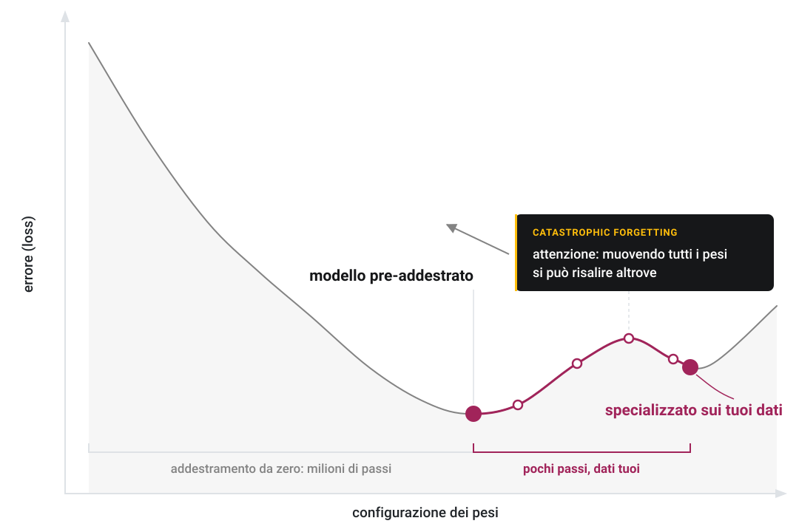
Serve un'alternativa che corregga senza riscrivere. È la prossima slide.
44 / Sezione 5
SEZIONE 5 · IL MODELLO NEL MONDO
LoRA: la correzione a basso rango
Non toccare Wla matrice originale resta congelata; si impara solo una correzione ΔW da sommarle.
Il vincolo (low-rank)ΔW è costretta a essere il prodotto di due matrici sottili, A e B: poche direzioni nuove, non una riscrittura — la specializzazione è un piccolo insieme di spostamenti nello spazio delle idee.
I numerir piccolo (8–64) contro dimensioni in migliaia: da d×d parametri a 2·d·r — meno dell'1%.
In pratical'adattatore (A, B) è un file di pochi MB: si monta, si smonta, se ne tengono molti — uno per dominio.
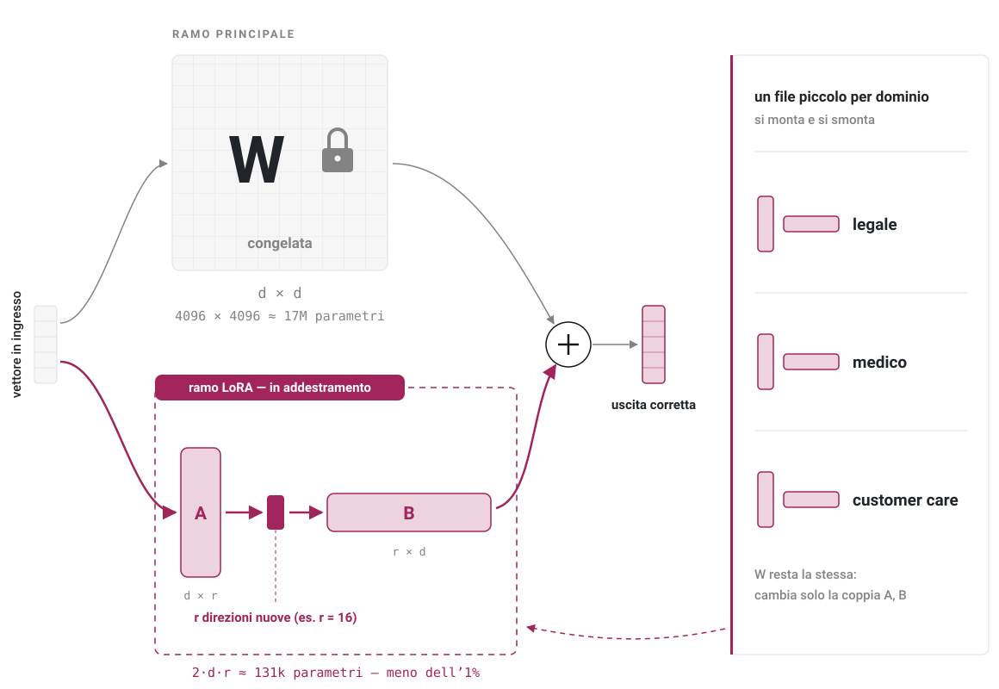
È questo a rendere davvero interessanti gli open weights (Slide 42): il modello resta condiviso, la specializzazione diventa tua.
45 / Sezione 5
SEZIONE 5 · IL MODELLO NEL MONDO
La fotografia del mercato
Asset esterno da inserire
Chart Pareto qualità/prezzo da arena.ai/leaderboard/text/pareto — screenshot o export da aggiornare a ridosso della lezione, proprio perché invecchia in fretta.
Qualità (Arena score) contro prezzo: contano i modelli sulla frontiera — a parità di qualità il meno caro, a parità di prezzo il migliore. La fotografia invecchia in settimane: il punto è saper leggere il grafico, non memorizzarlo.